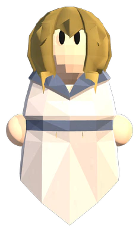
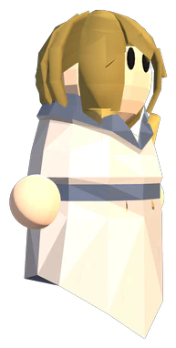
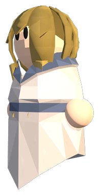

Katherine
Katherine (Greenshore Provisioner) gives 4 quest lines and keeps Katherine's General Goods.
Quest lines
- Trouble in Greenshore: Katherine wants to know what has got into the creatures of Greenshore. (6 steps)
- Spirits in the Glass: Katherine wants to know what got into the tombs of the Pyramids. (4 steps)
- Across the Sand: Katherine wants to know what is happening out in the Red Desert. (7 steps)
- Sun and Sand: Katherine wants the Sand Veil's sun magic understood. (3 steps)
Shop
Katherine's General Goods: Potions and basic armor for your first trips out.
Thanks. That restocks my shelves.Katherine, on a quest turned in
Gallery







Trivia
Not written yet
Anything else worth knowing about Katherine.